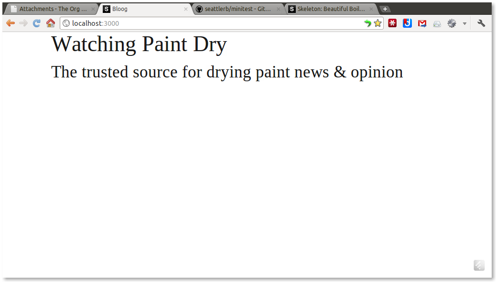
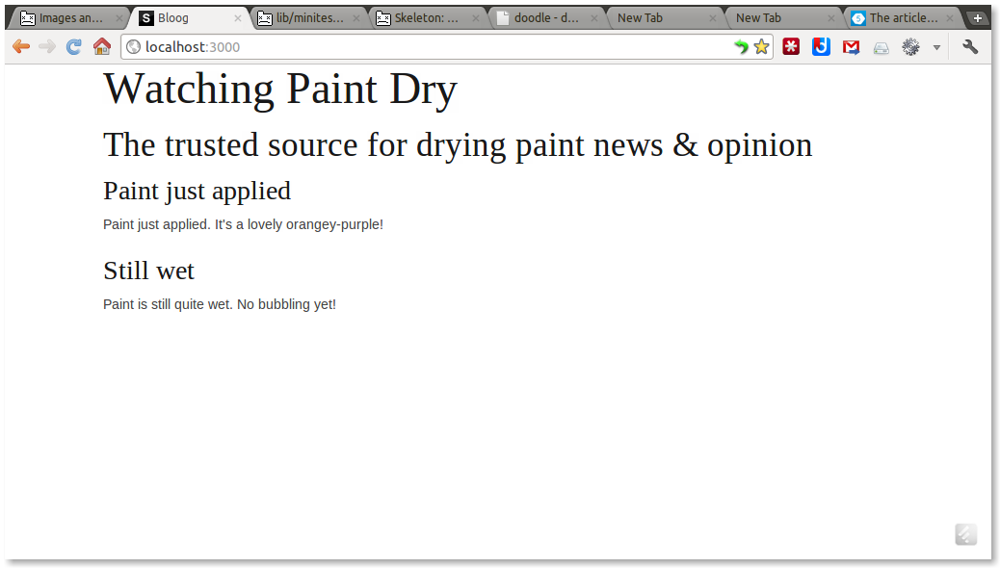
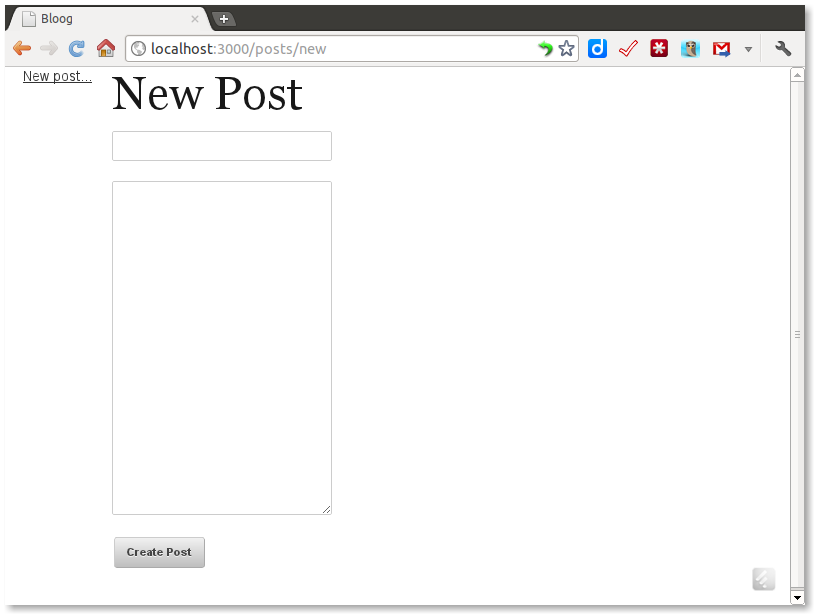
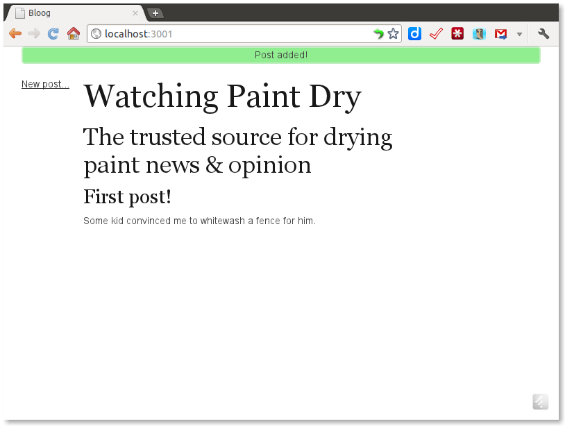
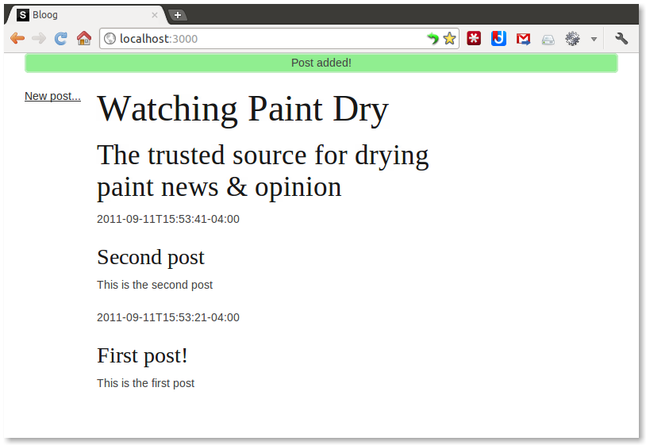
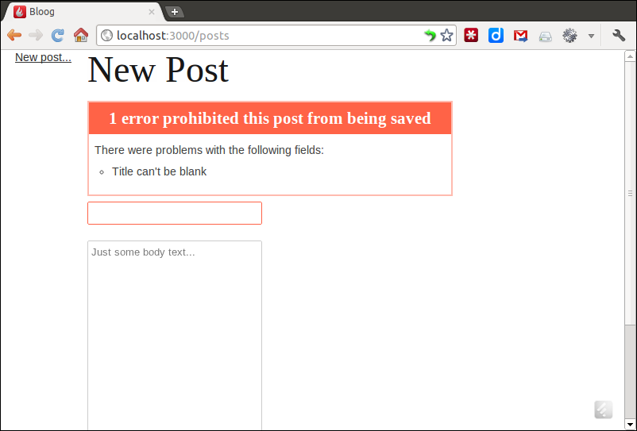
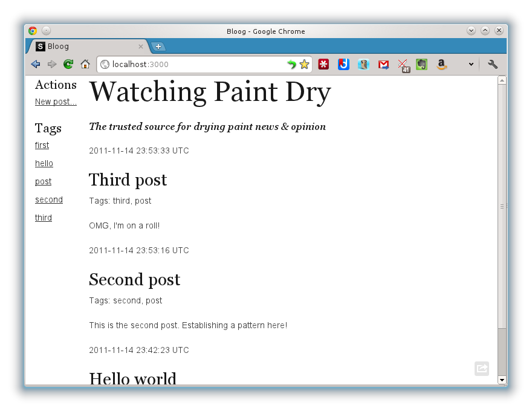

Objects on Rails
Table of Contents
- 1 About
- 2 Preface
- 3 Introduction
- 4 Yet another frickin' blog app
- 5 Adding blog entries
- 6 Submitting posts
- 7 Getting the tests running again
- 8 Adding timestamps
- 9 OMG Dependency Injection!
- 10 Sorting and limiting posts
- 11 Adding validation
- 12 Presenters
- 13 Presenters for REST
- 14 Making the data stick around
- 15 Concealing ActiveRecord behind a
FigLeaf - 16 Adding tags
- 17 An Object Model for Tags
- 18 Attaching the
TagListto aPost - 19 Making
Postmore tag-aware - 20 Accepting and displaying tags
- 21 Extracting a Taggable role
- 22 Refactoring to a separate ActiveRecord model
- 23 Data-Context-Interaction
- 24 Conclusion
- 25 Further reading
- 26 Photo Credits
- 27 Issues
1 About
Objects on Rails
Copyright © 2011 by Avdi Grimm. All rights reserved.
Version 0.0.2
Have comments, suggestions, or corrections; or want to discuss the book with other readers? Go to: https://groups.google.com/group/objects-on-rails
1.1 History
- 2011-11-16 First round of typo fixes after beta release
2 Preface
This was supposed to be a blog post, or at most a series of blog posts. Frequently at conferences and users groups I find myself discussing the intersection of Ruby on Rails, Object-Oriented development, and Test-Driven Development, and I'll mention something like "I prefer to develop my business objects first, and add ActiveRecord in later". This usually leads to questions about how I structure my projects, how I isolate the business logic from ActiveRecord for testing, and so on. These discussions usually wind up with me saying "I'll write a blog post about it…".
This is that blog post, or at least it started out that way. I quickly realized that the only way to show my approach without a lot of hand-waving was to build a project from scratch, showing every step. The resulting code and text quickly ballooned, and the result is the text you are reading now.
3 Introduction
Hi there! Welcome to Objects on Rails. This text is a step-by-step walkthrough following the construction of a simple web application using Ruby on Rails. It differs from other such walkthroughs in that it attempts to apply a strongly Object-Oriented philosophy to the process.
"Wait a sec" you may ask. "Isn't Rails already Object-Oriented?" Well, yes and no. While Rails is written in a thoroughly OO language, and built on some solid OO patterns, there are aspects of conventional Rails application development which depart significantly from OO practices.
Which is not necessarily a problem in and of itself. Lots of programs get by just fine with (for instance) a mix of OO and Functional programming styles. But experience has shown that these same Rails not-so-OO practices, such as Single Responsibility Principle (SRP) violations in models, or complex business logic in helpers, are a common source of development headaches and delays in maturing Rails applications.
In this text, we'll step through building a Rails application using some techniques I've found efficacious for keeping apps on the object-oriented rails.
We'll also take a look at some more experimental techniques. Full disclosure: I've used the development of this text as a proving ground for some approaches I haven't yet applied to production applications. I don't think anything I'm presenting here is a terrible idea (or I wouldn't be presenting it); but some of the strategies haven't been battle-tested over the full development cycle. In transferring what you learn into your own work, use judgment, confer with the rest of your team, and don't rewrite your whole app overnight.
3.1 What this is not
- This is not a Rails tutorial
- Familiarity with Rails and Ruby is assumed.
- This is not a Rails critique
- This is not all about how "Rails is wrong". Rails is a terrifically powerful framework for quickly assembling web applications. I'm interested in how to better use the tools Rails provides, not so much in how to subvert or replace them.
- This is not comprehensive
- This is just a catalog of some techniques I'm using in late 2011. It doesn't capture every possible application of OO patterns or SOLID principles to Rails development.
- This is not a rule book or a "best-practices" manual
- The last thing I want anyone to do is follow the approach shown here as a book of rules for how to build a Rails application "right". I hope that you'll consider the patterns and idioms presented here, and select the ones that speak to you and make sense for your application.
3.2 About the approach
This text takes the form of a walkthrough. We'll build an app step-by-step using Test-Driven Design (TDD), at most steps presenting test code followed by implementation code.
However, while we will use TDD at the unit test level to drive development, there is a major piece missing from our TDD stack. Ordinarily, when building a "real" app, I would drive each feature from the outside in using acceptance tests, typically writtin using Cucumber. However, in the interests of brevity, I omit the acceptance testing component in this document.
3.3 A note on scale
The challenge in writing about code patterns is to come up with examples that are simple and clear enough that the supporting code doesn't get in the way of understanding the specific technique being demonstrated–while still hopefully avoiding examples that feel completely contrived. Unfortunately, if you succeed in that, you are often confronted with a new problem: the example problems you carefully distilled down to their essence now seem so simple, so trivial that whatever refactoring or abstraction you're trying to illustrate seems superfluous and a waste of effort.
The application I work through in these pages is a deliberately simple one, and many of the techniques I demonstrate may seem like massive overkill for the task at hand. Please understand, as you read through the examples, that these are patterns and idioms intended to make the development and evolution of large-scale applications more tractable. While they may seem less than compelling in the context of a "toy" app, hopefully you can visualize how they might be helpful for larger-scale development.
3.4 Why OOP?
Why bother with these techniques? What's wrong with the way we've always written Rails applications?
The biggest reason—scratch that, the only reason—is to make our apps easier to change. The only constant in life is change, and that goes double for software projects. Markets change, requirements change, external dependencies change, and platforms change. As I've written about at length elsewhere, Rails is reaching a point at the time of writing where a lot of projects are starting to mature, and a lot of developers are realizing their projects aren't nearly as easy to modify as they used to be.
It's risky for me to give some specific example, e.g. "by following these guidelines, you'll be able to easily change to MongoDB in the future!". Inevitably someone will say "hah, my app will never need to switch to MongoDB, therefore I don't need these techniques!"
Attempts to predict which parts of a codebase will need to change, and to structure it accordingly, have ended badly more often than not. Part of the nature of change is that you often don't know beforehand what is going to need change. In this text I'm not going to attempt to say "using such and so technique will make such and so component easier to change". In fact, I would encourage you not to spend too much time thinking about what is most likely to change. Much like premature optimization, premature change management usually misses the mark.
Amongst all this uncertainty, there are some basic principles that have proven, over decades of Object-Oriented software development, to make software generally more flexible and amenable to change. Principles such as:
- Small objects with a single, well-defined responsibility.
- Small methods that do only one thing.
- Limiting the number of types an object collaborates with.
- Strictly limiting the use of global state and singletons (that includes limiting the use of class-level methods).
- Small object interfaces with simple method signatures.
- Preferring composition over inheritance.
These rules of thumb, practiced habitually, tend to lead to more flexible codebases which can adapt to any type of change adroitly; whether the change is a data model which better resembles the problem domain; a new data storage backend; or a re-structuring of the app into a half-dozen mini-apps.
So the answer to why, in the end, is "because things change". Some good habits early on in a project can save a lot of headaches down the road.
With that intent in mind, let's jump in!
4 Yet another frickin' blog app
Let's write a new blog app in Rails, since no one's ever done that before!
I guess we should start with the home page. Let's add a route:
root :to => "blog#index"
Now we'll need a controller for that route to work:
$ rails g controller blog index
identical app/controllers/blog_controller.rb
route get "blog/index"
invoke erb
exist app/views/blog
identical app/views/blog/index.html.erb
invoke helper
identical app/helpers/blog_helper.rb
Hmm, what should the view look like?
Well, we are presenting a blog. So presumably we'll have an object to represent the blog.
<!-- app/views/blog/index.html.erb --> <h1><%= @blog.title %></h1> <h2><%= @blog.subtitle %></h2>
OK, now we know we need a blog object in the view. Let's create it in the controller:
# app/controllers/blog_controller.rb class BlogController < ApplicationController def index @blog = Blog.new end end
Looks like we need a Blog class next.
# app/models/blog.rb class Blog def title "Watching Paint Dry" end def subtitle "The trusted source for drying paint news & opinion" end end
At this point we can load the page:

5 Adding blog entries
A blog without entries isn't very useful. Let's add blog posts to the app. Since we're adding something more complex than just static strings, we'll TDD it. Just to prove there's nothing up our sleeves, we'll use minitest:
# spec/models/blog_spec.rb require 'minitest/autorun' require_relative '../../app/models/blog' describe Blog do before do @it = Blog.new end it "should have no entries" do @it.entries.must_be_empty end end
Running this spec results in a failure:
$ ruby spec/models/blog_spec.rb
Loaded suite spec/models/blog_spec
Started
E
Finished in 0.001575 seconds.
1) Error:
test_0001_should_have_no_entries(BlogSpec):
NoMethodError: undefined method `entries' for #<Blog:0x894b044>
spec/models/blog_spec.rb:10:in `block (2 levels) in <main>'
1 tests, 0 assertions, 0 failures, 1 errors, 0 skips
To make it pass, we add an entries attribute to Blog:
class Blog attr_reader :entries def initialize @entries = [] end # ... end
When we run the tests again, they pass:
$ ruby spec/models/blog_spec.rb Loaded suite spec/models/blog_spec Started . Finished in 0.002619 seconds. 1 tests, 2 assertions, 0 failures, 0 errors, 0 skips
You may have noticed that we're not using any kind of Rails integration for setting up and running the tests. We're not even relying on Rails constant autoloading. This is intentional. By writing ordinary "plain old tests" which don't rely on any special Rails helpers, we keep the tests isolated and force ourselves to be deliberate about creating any dependencies between our objects. We anticipate that this will have a salutory effect on the object design which emerges from our TDD process.
As a welcome side effect, the tests run ridiculously fast.
5.1 Placeholder blog entries
OK, now we have an entries attribute on Blog, but there's nothing
in it. Let's add some temporary example blog posts in the
BlogController.
def index @blog = Blog.new post1 = @blog.new_post post1.title = "Paint just applied" post1.body = "Paint just applied. It's a lovely orangey-purple!" post1.publish post2 = @blog.new_post(title: "Still wet") post2.body = "Paint is still quite wet. No bubbling yet!" post2.publish end
You may have noticed that we're calling a #new_post method which
doesn't exist yet, followed by some other methods on the return value
which also don't exist. Now that we know what code we need, let's make
it exist.
5.2 Making new entries
First, let's specify that #new_post method. Clearly it needs to
return some kind of blog post object which is associated with the Blog
object. However, we want to keep our tests isolated, and we only want
to test one model at a time. So we'll make the process by which new
posts are created easy to swap out:
class Blog # ... attr_writer :post_maker # ... private def post_maker @post_maker ||= Post.public_method(:new) end end
During normal operation, Blog will use the (not yet written)
Post.new method to generate post objects. But we can substitute any
call-able object when testing the class.
Now we'll make some assertions about how Blog#new_post should behave:
# spec/models/blog_spec.rb describe Blog do # ... describe "#new_post" do before do @new_post = OpenStruct.new @it.post_maker = ->{ @new_post } end it "should return a new post" do @it.new_post.must_equal @new_post end it "should set the post's blog reference to itself" do @it.new_post.blog.must_equal(@it) end end end
Here, we substitute a lambda which simply returns an OpenStruct for
the #post_maker.
Making these pass is straightforward:
class Blog # ... def new_post post_maker.call.tap do |p| p.blog = self end end end
5.3 The Post class
It's pretty obvious that our next step needs to be creating a Post
class. Let's specify its behavior.
# spec/models/post_spec.rb require 'minitest/autorun' require_relative '../../app/models/post' describe Post do before do @it = Post.new end it "should start with blank attributes" do @it.title.must_be_nil @it.body.must_be_nil end it "should support reading and writing a title" do @it.title = "foo" @it.title.must_equal "foo" end it "should support reading and writing a post body" do @it.body = "foo" @it.body.must_equal "foo" end it "should support reading and writing a blog reference" do blog = Object.new @it.blog = blog @it.blog.must_equal blog end describe "#publish" do before do @blog = MiniTest::Mock.new @it.blog = @blog end after do @blog.verify end it "should add the post to the blog" do @blog.expect :add_entry, nil, [@it] @it.publish end end end
Next we satisfy the specification:
# app/models/post.rb class Post attr_accessor :blog, :title, :body def publish blog.add_entry(self) end end
5.4 Why #publish?
If you've written a few Rails apps you may be wondering why we're
calling the method which makes a new blog entry #publish instead of
#save.
One of the central elements of object-oriented design is capturing the
language of the domain in our models. Think for a minute about the
language of blogging. No one ever says "I saved a blog post the
other day". They say "I published a blog post" or maybe "I posted
a blog entry". By calling the method #publish, we are continuing to
build a system which echoes our mental model of the domain.
Consider how we might extend this program in the future. We might add scheduled posts, which appear some period of days later than they are first saved. We might also add a draft state for posts, where they are saved but they are only visible to the blog owner.
Our choice of the verb #publish fits right into this extended
workflow:
post.save_draft # followed by ... post.schedule # or... post.publish
This is not a coincidence. Choosing appropriate domain language for program elements often means we don't need to rename as many things as we add more features down the road.
5.5 Adding entries to the blog
Driving out Post has revealed that we need one more method on
Blog, one which will actually add the post to the blog. We'll
quickly spec it out and add it.
describe Blog do describe "#add_entry" do it "should add the entry to the blog" do entry = Object.new @it.add_entry(entry) @it.entries.must_include(entry) end end end
class Blog # ... def add_entry(entry) entries << entry end # ... end
Looking back at our demo code in the BlogController, we remember
that in making a second post, we changed things up a little and passed
in the title as an argument:
post2 = @blog.new_post(title: "Still wet")
Let's modify Blog#new_post to support this syntax. First, the spec:
# ... it "should accept an attribute hash on behalf of the post maker" do post_maker = MiniTest::Mock.new post_maker.expect(:call, @new_post, [{:x => 42, :y => 'z'}]) @it.post_maker = post_maker @it.new_post(:x => 42, :y => 'z') post_maker.verify end # ...
And then the implementation:
# ... def new_post(*args) post_maker.call(*args).tap do |p| p.blog = self end end # ...
Now we're passing the arguments along, but we still need to implement
keyword arguments on the Post initializer.
describe Post do # ... it "should support setting attributes in the initializer" do it = Post.new(:title => "mytitle", :body => "mybody") it.title.must_equal "mytitle" it.body.must_equal "mybody" end # ... end
class Post # ... def initialize(attrs={}) attrs.each do |k,v| send("#{k}=",v) end end # ... end
Now we just need to update the views to show our posts.
<!-- app/views/blog/index.html.erb --> <h1><%= @blog.title %></h1> <h2><%= @blog.subtitle %></h2> <%= render partial: "entry", collection: @blog.entries %>
<!-- app/views/blog/_entry.html.erb --> <article> <header> <h3><%= entry.title %></h3> </header> <p><%= entry.body %></p> </article>
Reloading the page, we can see our demo entries.

Showing entries
6 Submitting posts
This is progress, but a blog with static entries doesn't do us a lot of good. We need to be able to submit new entries.
First we'll add a "New post" link.
<!-- app/views/layouts/application.html.erb --> <!-- ... --> <div class="sidebar two columns"> <nav> <ul> <li><%= link_to "New post...", new_post_path %></li> </ul> </nav> </div> <!-- ... -->
For that new_post_path call to work we need a route:
# config/routes.rb # ... resources :posts # ...
And for the route to work we need a controller:
# app/controllers/posts_controller.rb class PostsController < ApplicationController def new @post = @blog.new_post end end
Looks like we need the @blog object in the PostsController as well
as the BlogController. Time to factor the code that sets it out into the
ApplicationController:
# app/controllers/application_controller.rb class ApplicationController < ActionController::Base # ... before_filter :init_blog private def init_blog @blog = Blog.new end end
That's enough to make the link render but we need somewhere for it to go. We'll create a quick "new post" form:
<!-- app/views/posts/new.html.erb --> <h1>New Post</h1> <%= form_for @post do |f| %> <%= f.text_field :title %> <%= f.text_area :body %> <%= f.submit %> <% end %>
We're almost there, but in order to construct paths and render forms,
Rails has certain expectations about the protocols that a model object
will respond to—protocols that our basic Post class doesn't know
about. The easiest way to make it compliant is to add a couple of
modules from ActiveModel. We also need to implement one method
ourselves: #persisted?. For now, it's sufficient to just return
false.
class Post extend ActiveModel::Naming include ActiveModel::Conversion # ... def persisted? false end # ... end
With that change, we can click on our "New post…" link and see a new post form.

New post form
So far so good. Now let's make submitting the form work. We need to
add a PostsController#create action.
class PostsController # ... def create @post = @blog.new_post(params[:post]) @post.publish redirect_to root_path, :notice => "Post added!" end # ... end
We can get rid of the demo posts in BlogController now.
class BlogController < ApplicationController def index end end
There's just one little problem remaining: a new blog object—and hence a new, blank list of posts!—is created with every request. We need to make a single blog object last across requests.
Our app only supports a single blog at the moment, so we'll just
store an instance to an app-wide Blog object using an initializer.
# config/initializers/blog.rb THE_BLOG = Blog.new
Now we change the before filter which sets the @blog variable to use
that constant:
class ApplicationController < ActionController::Base # ... def init_blog @blog = THE_BLOG end end
And now we can submit new posts!

7 Getting the tests running again
Unfortunately, our changes to the Posts model have broken our tests.
$ ruby spec/models/post_spec.rb
app/models/post.rb:2:in `<class:Post>': uninitialized constant Post::ActiveModel (NameError)
from /home/avdi/Dropbox/books/objects-on-the-web/bloog/app/models/post.rb:1:in `<top (required)>'
from spec/models/post_spec.rb:2:in `require_relative'
from spec/models/post_spec.rb:2:in `<main>'
Our nicely isolated tests don't know where to find ActiveModel.
We could fix this by requiring ActiveModel somewhere in the test setup. But we don't actually need ActiveModel for the tests to pass. And we really like how fast the tests run with so few dependencies. Is there some way we can continue to keep our models as lightweight as possible while testing their behavior, and only use dependencies like ActiveModel when running as part of an application? Let's find out.
Our first crack at this problem might be to simply define empty
versions of the needed modules in the test file, before requiring the
post.rb file.
# spec/models/post_spec.rb # ... module ActiveModel module Naming; end module Conversion; end end require_relative '../../app/models/post' # ...
This gets the test passing again. But this approach is
problematic. Let's say we had these tests running as part of a Rake
task which also included full-stack tests. As a result, the task
loaded the full Rails environment. Depending on load order, this file
with its empty definitions of ActiveModel::Naming and
ActiveModel::Conversion might cause ActiveSupport to think that
those modules had already been loaded—and therefore never load the
real versions. This is definitely not what we want.
What we really need is a way to conditionally create empty or "stub" modules only if a) they are not already defined; and b) they are not auto-loadable. Here's a method which does just that.
# spec/spec_helper_lite.rb def stub_module(full_name) full_name.to_s.split(/::/).inject(Object) do |context, name| begin context.const_get(name) rescue NameError context.const_set(name, Module.new) end end end
This method uses #const_get to attempt to reference the given
module. If the module is defined, or if calling #const_get causes it
to be auto-loaded, the method does nothing more. But if #const_get
fails to turn up the module, it defines an anonymous empty module to
act as a placeholder.
Here it is being used to stub out modules in our Post spec:
# ... require_relative '../spec_helper_lite' stub_module 'ActiveModel::Conversion' stub_module 'ActiveModel::Naming' require_relative '../../app/models/post' # ...
The tests are once again passing:
$ ruby spec/models/post_spec.rb Loaded suite spec/models/post_spec Started ...... Finished in 0.000530 seconds. 6 tests, 7 assertions, 0 failures, 0 errors, 0 skips
8 Adding timestamps
Two features that are pretty much required for a blog are 1) time-stamped posts; and 2) listing posts in reverse-chronological order. So far our blog supports neither of these. Time to fix that.
Once again, we'll take an outside-in approach and first find a place in the views to display the (as-yet nonexistent) timestamp.
<!-- app/views/blog/_entry.html.erb --> <article> <header> <p><time pubdate="pubdate"><%= entry.pubdate %></time></p> <h3><%= entry.title %></h3> </header> <p><%= entry.body %></p> </article>
An entry's publishing timestamp should start out blank and then be filled in once it is published. Let's spec that out.
1: # ... 2: describe "#pubdate" do 3: describe "before publishing" do 4: it "should be blank" do 5: @it.pubdate.must_be_nil 6: end 7: end 8: 9: describe "after publishing" do 10: before do 11: @it.blog = stub! # (ref:stub) 12: @it.publish 13: end 14: it "should be a datetime" do 15: @it.pubdate.class.must_equal(DateTime) 16: end 17: end 18: end 19: # ...
Note the use of stub! at line nil. MiniTest's built-in mocking
was becoming insufficient for our needs, so we've supplemented it with
rr, a succinct but powerful test double library. Here's the setup for that:
# spec/spec_helper_lite.rb require 'rr' class MiniTest::Unit::TestCase include RR::Adapters::MiniTest end
The timestamp isn't much help if it doesn't use the current time. Let's add a spec asserting that it does.
# ... describe "#pubdate" do # ... describe "after publishing" do before do @clock = stub! @now = DateTime.parse("2011-09-11T02:56") stub(@clock).now(){@now} @it.blog = stub! @it.publish(@clock) end # ... it "should be the current time" do @it.pubdate.must_equal(@now) end end end # ...
That's a lot of test setup; any more and we'd want to find a way to refactor the tests.
Now, besides for creating a stubbed blog instance, we're also
creating a @clock stub. We create a fixed @now time for the clock
to respond with when #now is called on it. Then we pass the clock
into the Post#publish method and assert that it uses the @now time
to set its #pubdate attribute.
Wait a second… does this mean the app will always have to pass a
clock object in to Post#publish now? Won't this break our other
tests where we pass nothing to #publish?
Sensible defaults to the rescue! Let's update the
Post#publish method to make this test pass:
# ... def publish(clock=DateTime) self.pubdate = clock.now blog.add_entry(self) end # ...
We add a clock parameter, and make it default to DateTime. That
way in the absence of any parameter, the method will just take its
timestamp from the system clock via DateTime.
Why make it possible to pass the clock in? We might turn the question
around: since up until in our unit tests now we've been very careful
to isolate our Code Under Test (CUT) from any external dependencies,
why make an exception for the system clock? By making it possible to
pass a clock object in, we make it very easy to test the behavior of
#publish deterministically, without resorting to heavy-handed
clock-overriding libraries such as Timecop.
But there are other advantages to passing the clock in, which we'll discuss in the next section.
9 OMG Dependency Injection!
In constructing carefully isolated tests, we have now used dependency
injection twice. First, we used setter injection to strategize how
Blog objects create new entries:
class Blog # ... attr_writer :post_maker # ... private def post_maker @post_maker ||= Post.public_method(:new) end end
And then moments ago we used parameter injection to pass in a clock
object to Post#publish:
# ... def publish(clock=DateTime) self.pubdate = clock.now blog.add_entry(self) end # ...
There is a lot of bad press around the Dependency Injection pattern these days. Most of it probably stems from the experiences people have had with heavyweight DI frameworks in Java and C#. As you can see, though, at its core Dependency Injection is just about making it possible to pass an object's collaborators in from the outside. As we've just seen, Ruby makes it very easy to make dependencies injectable while still having sensible built-in defaults for those dependencies.
Is all this care taken to make dependencies injectable solely in order to satisfy our need for isolated tests? Well, certainly that's what drives us to provide for DI in the first place. But what's interesting about this discipline of strict isolation is the type of object design it pushes us towards.
Let's say we wanted to add the ability to post-date or pre-date some
posts. Currently, Post sets its pubdate at publish time, so we
can't just set the date when we create the post. Of course, we could
add some new behavior to Post to implement custom pubdate setting;
but because we've made the clock injectable, we can implement custom
publish dates without making any changes at all to Post:
fixed_clock = OpenStruct.new(:now => DateTime.parse(params[:pubdate])) @post.publish(fixed_clock)
Here, we've just used OpenStruct to create a quick ad-hoc object
which responds to the #now method with a fixed date.
We could get as fancy as we wanted with custom clocks. We could implement a delay so that posts have a review period before going live:
class DelayClock def now DateTime.now + 24.hours end end # ... @post.publish(DelayClock.new)
All without making any changes to the Post class.
According to the Single Responsibility Principle (SRP), a class should have one, and only one, reason to change. In a system that respects SRP, a single change in functionality ought to mean changing one, and only one, class.
Consider that if we had not made the clock an injectable dependency,
implementing post-dating and pre-dating would have meant changing the
code in (at least) two places: once in the controller, and once in the
Post model. By contrast, in our current design we are able to
implement the feature by changing the code in only one place.
By letting our discipline of test isolation drive our design, we arrived at a system that respects SRP without even really thinking about it.
10 Sorting and limiting posts
OK, now we have timestamps on the posts. On a proper blog, posts are listed in reverse-cronological order, with the most recent post at the top. Let's implement sorting by timestamp, and while we're at it, let's limit the display to the ten most recent posts.
Spec:
# spec/models/blog_spec.rb # ... describe "#entries" do def stub_entry_with_date(date) OpenStruct.new(:pubdate => DateTime.parse(date)) end it "should be sorted in reverse-chronological order" do oldest = stub_entry_with_date("2011-09-09") newest = stub_entry_with_date("2011-09-11") middle = stub_entry_with_date("2011-09-10") @it.add_entry(oldest) @it.add_entry(newest) @it.add_entry(middle) @it.entries.must_equal([newest, middle, oldest]) end it "should be limited to 10 items" do 10.times do |i| @it.add_entry(stub_entry_with_date("2011-09-#{i+1}")) end oldest = stub_entry_with_date("2011-08-30") @it.add_entry(oldest) @it.entries.size.must_equal(10) @it.entries.wont_include(oldest) end end # ...
Implementation:
# app/models/blog.rb # ... def entries @entries.sort_by{|e| e.pubdate}.reverse.take(10) end # ...
We also have to change the #add_entry method to reference the
@entries collection directly, now that #entries returns a modified
copy:
# ... def add_entry(entry) @entries << entry end # ...
With that, our blog is starting to behave more like the real thing:

11 Adding validation
Blog posts, at the very least, should have a title. Let's add a validation to enforce this constraint.
Here's the specification:
# ... it "should not be valid with a blank title" do [nil, "", " "].each do |bad_title| @it.title = bad_title refute @it.valid? end end it "should be valid with a non-blank title" do @it.title = "x" assert @it.valid? end # ...
We could manually implement a #valid? method here. But we know that
Rails needs more than just a #valid? method in order to present
validation failures in a user-friendly way. And besides, why write
that method when it's a one-liner using ActiveModel?
class Post # ... include ActiveModel::Validations validates :title, :presence => true # ... end
Now that we're using ActiveModel to satisfy our own expectations as well as Rails' expectations, we can no longer stub out the ActiveModel modules when running in isolation. We must use the real thing.
These lines will have to go:
stub_module 'ActiveModel::Conversion' stub_module 'ActiveModel::Naming'
And we have to add a requirement for ActiveModel to the model file:
require 'active_model'
When running in the full app, this won't be necessary. But we need it in order to continue running our tests outside of the Rails environment. By explicitly requiring ActiveModel only in files which need it, we don't saddle unrelated tests with the extra load time.
While we're adding validation to the Post class, let's also modify
the contract of #publish to only add posts to Blog when the post
is valid, and to return false when validation fails.
# ... describe "#publish" do # ... describe "given an invalid post" do before do @it.title = nil end it "should not add the post to the blog" do dont_allow(@blog).add_entry @it.publish end it "should return false" do refute(@it.publish) end end end # ...
class Post # ... def publish(clock=DateTime) return false unless valid? self.pubdate = clock.now @blog.add_entry(self) end # ... end
With these changes in place, we can update the PostsController to
handle validation failures:
# ... def create @post = @blog.new_post(params[:post]) if @post.publish redirect_to root_path, notice: "Post added!" else render "new" end end # ...
With that change and some tweaks to the view (not shown), we now get an error message when we try to submit a blog post with no title.

Validation error message
12 Presenters
No blog is complete without the ability to post funny cat pictures. We'd like to add the ability to attach a picture URL to posts. In addition, we want to present posts differently if they have a picture URL. The "body" text will become the picture caption.
As before, we'll start at the view level and work inward. We'll add a picture URL field to the new post form:
<!-- app/views/posts/new.html.erb --> <%= form_for @post do |f| %> # ... <%= label :image_url, "Picture URL:" %> <%= f.text_field :image_url %> # ... <% end %>
And we'll create partials for both displaying text-only entries and for displaying picture entries. Here's the one for picture entries:
<!-- app/posts/_picture_body.html.erb --> <figure> <img src="<%= post.image_url %>"/> <figcaption><%= post.body %></figcaption> <figure/>
We're using the HTML5 <figure> and <figcaption> tags to mark
up a picture semantically.
We also go ahead and add an image_url attribute to the Post model.
# ... attr_accessor :blog, :title, :body, :image_url, :pubdate # ...
Now the question is how to ensure that the correct partial is rendered based one what kind of post it is. Initially, we might think to do something like this:
<!-- app/views/blog/_entry.html.erb --> <!-- ... --> <% if entry.image_url.present? %> <%= render "/posts/picture_body", post: entry %> <% else %> <%= render "posts/text_body", post: entry %> <% end %> <!-- ... -->
But this raises some warning flags. Logic in views is almost always bad news, even logic as simple as this. Speaking from my own experience, a lot of the technical debt I've seen in Rails projects has been in convoluted view code. If possible, it would be nice to avoid going down that road so early in the project.
And anyway, from an Object-Oriented Design perspective this just feels wrong. Remember those beginning OO examples, where you send a "draw" message to a "shape" object, and if it's a Circle it will draw a circle, and if it's a square it will draw a square? What's the point of using an OO language if we can't use polymorphism, and instead fall back on conditionals everywhere?
Conceptually what we have here are two post types: a "picture post", and a "text post". The core of OO philosophy is representing discrete concepts as objects. So let's take these two concepts and represent them as objects.
But what kind of objects? The models in an MVC application are supposed to be presentation-agnostic—they shouldn't know anything about how to display themsevelves. And we know we don't want to put business logic into the views. It seems like we need a third kind of object between a Model and a View.
12.1 Presenting the Presenter
One such type of object is called a Presenter. If the Model is concerned with storing and manipulating business data, and the View is concerned with displaying it, you can think of the Presenter as standing between them deciding which data to show.
Presenter libraries for Rails have started to pop up lately, but for this app we'll roll our own. Let's first specify the behavior of a Presenter for a "picture post".
# spec/presenters/picture_post_presenter_spec.rb require_relative '../spec_helper_lite' require_relative '../../app/presenters/picture_post_presenter' describe PicturePostPresenter do before do @post = OpenStruct.new( title: "TITLE", body: "BODY", pubdate: "PUBDATE") @template = stub! @it = PicturePostPresenter.new(@post, @template) end it "delegates method calls to the post" do @it.title.must_equal "TITLE" @it.body.must_equal "BODY" @it.pubdate.must_equal "PUBDATE" end it "renders itself with the appropriate partial" do mock(@template).render( partial: "/posts/picture_body", locals: {post: @it}){ "THE_HTML" } @it.render_body.must_equal "THE_HTML" end end
We define stubs for both a "post" object, and a "template" object. The
@post stub stands in for a Post instance. The @template object
stands in for the Rails template object which is the context that all
views are rendered in. When you call helpers like #render or
#form_for in a Rails view, you're calling them on the template
object.
Then we specify that the presenter must 1) act as a "pass-through" object, forwarding any methods it doesn't know about on to the model object; and 2) that it must know how to use the template to render an appropriate post body partial.
Next we write an implementation which satisfies this spec.
# app/presenters/picture_post_presenter.rb require 'delegate' class PicturePostPresenter < SimpleDelegator def initialize(model, template) @template = template super(model) end def render_body @template.render(partial: "/posts/picture_body", locals: {post: self}) end end
We've defined a new directory, app/presenters, for Presenter
objects. In it, we've created a PicturePostPresenter class.
This class inherits from SimpleDelegator. SimpleDelegator is Ruby
standard library class which has a very simple job: forward all calls
to an underlying object. Not very useful in and of itself; but as a
basis for defining Decorator objects it's quite handy.
In the presenter initializer, we save the view template in an instance
variable. Then we call the SimpleDelegator initializer with super,
to set up delegation to the model object.
In the #render_body method, we use the saved @template to render a
partial for a picture-type post.
The presenter for text-only posts is nearly identical. Because it's so similar, I'll omit the spec for it and just show the implementation:
# presenters/text_post_presenter.rb require 'delegate' class TextPostPresenter < SimpleDelegator def initialize(model, template) @template = template super(model) end def render_body @template.render(partial: "/posts/text_body", locals: {post: self}) end end
The only difference here is a different partial being rendered.
Now we need an easy way to wrap a model object in the appropriate presenters (if any). Let's spec out a helper to do that:
# spec/helpers/presenters_helper_spec.rb require_relative '../spec_helper_lite' require_relative '../../app/helpers/presenters_helper' stub_class 'PicturePostPresenter' stub_class 'TextPostPresenter' stub_class 'Post' describe PresentersHelper do before do @it = Object.new @it.extend PresentersHelper @template = stub! end it "should decorate picture posts with a PicturePostPresenter" do post = Post.new stub(post).picture?{true} @it.present(post, @template).must_be_kind_of(PicturePostPresenter) end it "should decorate text posts with a TextPostPresenter" do post = Post.new stub(post).picture?{false} @it.present(post, @template).must_be_kind_of(TextPostPresenter) end it "should leave objects it doesn't know about alone" do model = Object.new @it.present(model, @template).must_be_same_as(model) end end
By it's nature, PresentersHelper is a piece of code which will have
to reference a lot of different classes, both model classes and
presenter classes. In order to avoid having test dependencies on all
those class definitions, we define and use a #stub_class test helper
which is almost identical in definition to the #stub_module method
we wrote before.
Here's helper code which satisfies the spec:
# app/helpers/presenters_helper.rb module PresentersHelper def present(model, template) # Doing a string comparison because of Rails class-reloading weirdness case model.class.name when 'Post' if model.picture? PicturePostPresenter.new(model, template) else TextPostPresenter.new(model, template) end else model end end end
Hey, I thought we were getting *rid* of conditionals! That's just a giant mass of conditionals! This is true. Unfortunately, it's not
always possible to completely eliminate type-based conditionals. What
we can do is isolate the conditionals to a single place, rather than
scattering them all over our view code. That's exactly what we're
trying to do here. Anywhere we might have done an if...then...else
in a view template based on an object's class or traits, we can
instead add a presenter to handle the conditional behavior
polymorphically. All the conditionals are consolidated on this one
helper method, which decides which presenter(s) to apply to a given
object.
The helper code above uses a #picture? predicate method on Post
objects. Let's quickly implement that.
Spec:
# ... describe "#picture?" do it "should be true when the post has a picture URL" do @it.image_url = "http://example.org/foo.png" assert(@it.picture?) end it "should be false when the post has no picture URL" do @it.image_url = "" refute(@it.picture?) end end # ...
Implementation:
# ... def picture? image_url.present? end # ...
Because we'll probably be using the #present helper method all over
the place in the future, we'll put it in our ApplicationController:
class ApplicationController < ActionController::Base # ... helper :presenters # ... end
Now, with our tiny homegrown presenter framework in place, we rewrite the blog entry partial.
<% entry = present(entry, self) %> <article> <header> <p><time pubdate="pubdate"><%= entry.pubdate %></time></p> <h3><%= entry.title %></h3> </header> <%= entry.render_body %> </article>
No more conditionals in the view! Just a simple method call to
#render_body which Does The Right Thing.
Here's how it looks when we post a picture:

12.2 Refactoring the presenters
The two presenters we defined are nearly identical. Clearly, they are
ripe for refactoring. Let's take care of that. We'll move the
commonalities into a Presenter base class:
# app/presenters/presenter.rb require 'delegate' class Presenter < SimpleDelegator def initialize(model, template) @template = template super(model) end end
Now our presenters are are a lot slimmer:
require_relative 'presenter' class PicturePostPresenter < Presenter def render_body @template.render(partial: "/posts/picture_body", locals: {post: self}) end end
The specs we wrote earlier help ensure that we haven't broken anything by performing this refactoring.
Before we move on, let's add a couple of extras to the Presenter
base class.
class Presenter < SimpleDelegator # ... def to_model __getobj__ end def class __getobj__.class end end
We don't have time to demonstrate it here, but these will help prevent
certain "gotchas" down the road. The first one defines #to_model to
return the wrapped model (the strange #__getobj__ method is how
SimpleDelegator refers to its underlying object). The second one
redefines #class to return the class of the original model, instead
of the class of the presenter. Together, these methods will ensure
that Rails helpers such as #form_for don't get confused when they
encounter models wrapped in presenters.
12.3 Do we need helpers?
Our use of presenters raises the question: what do we need view helpers for? Anything?
In my experience helpers in Rails apps tend to devolve into large, disorganized bags of unrelated methods. Often these methods repeat the same conditional business logic over and over again. For instance, how many times have you seen helper code like this:
if current_user.logged_in? # ... else # ... end
Thinning out helpers by taking some of their presentation responsibilities away is not a bad thing, in my view.
That said, I don't think helpers are completely useless. They are a good place to put general rendering methods which aren't tied to any particular model. For instance, we could write a helper for displaying HTML5-style images with captions:
module FigureHelper def figure(image_path, caption) content_tag(:figure) do image_tag(image_path) + content_tag(:figcaption, caption) end end end
This helper generates markup that looks like this:
<figure> <img alt="freshpaint.jpg" src="http://example.org/f.jpg" /> <figcaption>Fresh paint</figcaption> </figure>
This is pretty generic code, and I think it works well in a helper.
13 Presenters for REST
Let's add a rudimentary RESTful API to our blog.
Really RESTful APIs make heavy use of hyperlinking in the resource representations they serve. For instance, a JSON representation of a blog post might look something like this:
{
"title": "Flakes",
"body": "Uh oh, the paint is starting to flake!",
"links": [
{
"rel": "next",
"href": "http://example.org/blog/posts/3",
},
{
"rel": "prev",
"href": "http://example.org/blog/posts/1"
},
{
"rel": "up",
"href": "http://example.org/blog/"
}
]
}
Constructing hyperlinked responses like this one presents us with a
problem. Normally, when rendering HTML representations, we render
links to other resources using the various routing helpers (such as
url_for or #post_url) that Rails provides for us inside of view
templates. But when we render JSON data, there typically is no
view template.
For instance, here's an implementation of Post#show that uses
Rails' #respond_with method:
def show @post = Post.find(params[:id]) respond_with(@post) end
In the absence of a template at [posts/show.json], a request for a
post in JSON format will result in call to Post#to_json.
We'd like Post#to_json to provide a fully hyperlinked JSON
representation as in the example above. But Post doesn't know
anything about routing… and that's the way it should be! Once
again, we need an object to mesh together information from a model
and information from the framework. Once again, we need a Presenter.
We could write a presenter specifically for converting Post
objects to JSON. But it would be tedious writing presenters for each
kind of model that we come up with, and in most cases the logic will
probably be the same. So instead, we'll write a generic
LinksPresenter which will work for most objects we throw at it.
We'll pick three simple link types to start with:
- prev
- next
- up
These are three of the standard link types defined in the HTML4
spec. When we serve a JSON representation of a blog post, we want to
include a link to the next chronoloigical post, the preceding post,
and the "parent" resource (up), which is the blog itself.
The LinkPresenter class will take a model object and a template
object, and adorn the model with next_url, prev_url, and
up_url methods. It will also augment the #to_json method to
include a list of links in the JSON Hyper-Schema style.
The spec for LinkPresenter isn't that exciting, so I'll omit
it. Here's the code:
class LinkPresenter < Presenter RELATIONS = %w[next prev up] def prev_url @template.url_for(prev) end def next_url @template.url_for(self.next) end def up_url @template.url_for(up) end def links_hash { "links" => RELATIONS.map { |rel| {"rel" => rel, "href" => send("#{rel}_url")} } } end def serializable_hash(*args) super.merge(links_hash) end def to_json(options={}) serializable_hash(options).to_json end end
In order to generate URLs, the LinkPresenter relies on the model
to respond to three methods, unsurprisingly called #prev, #next,
and #up. These methods are expected to return the model object
with the specified relationship to the receiver.
Implementing these methods for Post is straightforward:
# ... def self.first_before(date) first(conditions: ["pubdate < ?", date], order: "pubdate DESC") end def self.first_after(date) first(conditions: ["pubdate > ?", date], order: "pubdate ASC") end # ... def prev self.class.first_before(pubdate) end def next self.class.first_after(pubdate) end def up THE_BLOG end # ...
Remember, we're avoiding exposing ActiveRecord built-in methods in
the Post public API, so we have to define explicit class-level
finder methods to retrieve the posts preceding and following a given
date. By defining explicit finders (.first_before and
.first_after) with constrained parameters, we keep the Post
interface manageable.
We update the #present method in PresentersHelper to add a
LinkPresenter to Post objects:
# ... when 'Post' model = if model.picture? PicturePostPresenter.new(model, template) else TextPostPresenter.new(model, template) end LinkPresenter.new(model, template) # ...
Then we modify PostsController to expose a #show method.
class PostsController < ApplicationController respond_to :html, :json include PresentersHelper # ... def show @post = present(Post.find_by_id(params[:id]), self) respond_with(@post) end end
We've made a few modifications here. First, we've used respond_to
to indicate that this controller can serve resources using JSON
representations. Then we've included the PresentersHelper so as to
give the controller access to #present. Finally, we've implemented
a #show method which finds the indicated Post, runs it through
present() to wrap it in all appropriate presenters, and then uses
respond_with to hook into Rails' automatic content negotiation
system.
If you're following along carefully, you might be wondering about
using PresentersHelper#present in a Controller, where before we only used it in
views. In particular, does it work to pass a controller as the
template argument to PresentersHelper#present?
While it's called template, the template parameter can really be
anything which responds to the various helper methods used by
presenters. In this case, the only presenter being called upon is
LinkPresenter, and the only helper method it needs from the
template is #url_for. Since #url_for is available in controllers
as well as in views, everything works out.
Well, almost. One of the things LinksPresenter will be calling
#url_for on is a post's #up relation, which is the global Blog
instance. As you'll recall, Blog is just an ordinary object, not
an ActiveRecord. As such, Rails has no idea how to convert it to a
route in #url_for.
I looked for a way to neatly hook into the machinery Rails uses to
map from the arguments to #url_for to a route and then to a
URL. Unfortunately I wasn't able to find anything. The solution I
settled on is a bit of a kludge. In ApplicationController, we
redefine #url_for to handle the Blog special case:
# ... def url_for(*args) # use string matching to avoid dev-mode autoloading issues if args.size == 1 && args.first.class.name == 'Blog' root_url else super end end # ...
If you know of a better solution, please get in touch!
We're now all set up to serve out JSON versions of blog posts. When
we create a few posts and then point curl at
http://localhost:3000/posts/2.json, here's what we get:
{
"body": "This is the second post. Establishing a pattern here!",
"created_at": "2011-11-14T23:53:16Z",
"id": 2,
"image_url": "",
"links": [
{
"href": "http://localhost:3000/posts/3",
"rel": "next"
},
{
"href": "http://localhost:3000/posts/1",
"rel": "prev"
},
{
"href": "http://localhost:3000/",
"rel": "up"
}
],
"pubdate": "2011-11-14T23:53:16Z",
"title": "Second post",
"updated_at": "2011-11-14T23:53:16Z"
}
That's just a beginning. I'm sure you can imagine how we might expand this out to include a JSON version of the home page, which contains links to individual posts, and so on.
14 Making the data stick around
Posts, time stamps, reverse-chronological sorting, image posting… we're well on our way to a working blog engine. But I feel like there's something missing. Some little detail, if I could just put my finger on it…
…oh yeah, persistence! It would probably be good if our blog posts lasted longer than run-time of the application server.
If you've been following along wondering "where's the ActiveRecord?", this is where we get to it. Now that we have figured out what our domain model looks like, it's time to start serializing the models to a database.
But first, a little philosophizing.
14.1 The trouble with ActiveRecord
ActiveRecord is an Object-Relational Mapper (ORM) based on the Active Record pattern from Patterns of Enterprise Application Architecture. As an ORM, it is semi-orthogonal to the business logic of your application. ORMs handle the loading and saving of objects to records in a database. The behavior of those objects, apart from persistence, is (theoretically) outside of the ORM's responsibilities.
In practice, real world Rails-based projects tend to be almost inextricably coupled to the ActiveRecord library. And not just to ActiveRecord; AR-based apps also tend to have very tight intercoupling between the various models in the system. In pathological cases, controllers and even views are also tightly married to the details of ActiveRecord and database schema.
Part of this is doubtless due to the way ActiveRecord integrates with
models. By declaring an is-a relationship between ActiveRecord and
model classes, your models are no longer just domain models; they
effectively are ActiveRecord. One result of this tight coupling is
that novice and intermediate Rails developers are often surprised to
find out that it's even permissible to have model objects which do
not inherit from ActiveRecord::Base. And even after they learn this
they sometimes still exile their non-ActiveRecord models to the lib/
ghetto, denying them their true place in app/models.
Consider the case of the #find method. By inheriting from
ActiveRecord::Base, you declare that your model supports
#find. Find supports (at last count) four modes (:id, :first,
:last, and :all), each of which can take any of twelve different
options. Some of the options, such as :conditions, can accept an
effectively limitless range of values.
#find is, in effect, an infinite protocol. This presents some
serious difficulties. Many Rails developers have discovered, for
instance, that it is very difficult to write meaningful ActiveRecord
mock objects in their tests. If they stictly specify all of the
#find arguments that their method-under-test must pass, they are
essentially dictating the implementation of the method in the
test. If, on the other hand, they stick with pure stubs which will
accept any possible call to #find, their tests are less brittle, but
also less useful because they don't actually specify much.
As a result, a lot of developers resort to running all of their unit
tests as what are, in effect, integration tests, with "real"
collaborator objects and full database interactions. The result, on
the testing side, is slow tests. The result on the application code
side is classes that freely call #find and friends on a half-a-dozen
different collaborator classes—thus ensuring that future
refactorings will be a slow and tedious process akin to un-teasing
thickly matted dreadlocks.
One day, after years of witnessing and addressing the technical debt incurred in various maturing Rails codebases as a result of ActiveRecord-inspired tight coupling, I had an epiphany. What if we stopped treating ActiveRecord as the backbone of our model classes, and instead, programmed as if ActiveRecord were merely a private implementation detail?
And this is why we have, so far, programmed this application without once touching ActiveRecord. We've worked through the object representation of domain concepts—blog, posts, publishing, etc—using traditional object-oriented analysis and development.
Now we'll add persistence to the mix. We'll use ActiveRecord, because it is both convenient and powerful. But we'll attempt to do it in a way that treats it as an internal concern to our models, not as the backbone of our design.
14.2 Adding ActiveRecord
Looking at our models, it's pretty clear that we need a "posts" table to hold blog posts. So we'll start by creating a migration to create that table.
class CreatePosts < ActiveRecord::Migration def self.up create_table :posts do |t| t.datetime :pubdate t.string :title t.text :body t.string :image_url t.timestamps end end def self.down drop_table :posts end end
Once we run this migration, we have a place to keep our blog
posts. Now we need to make the Post model store itself there.
We need to make several changes to the Post and Blog code.
require 'date' require 'active_record' class Post < ActiveRecord::Base validates :title, :presence => true attr_accessor :blog def picture? image_url.present? end def publish(clock=DateTime) return false unless valid? self.pubdate = clock.now @blog.add_entry(self) end end
Postnow inherits fromActiveRecord::Base. We requireactive_recordfor when we are running tests in isolation.- The various individual ActiveModel mixins are gone, subsumed into
ActiveRecord::Base. - No more attribute accessors for
title,body, andimage_url. Those are handled by ActiveRecord now. - No more initializer. Its former functionality is rendered redundant by the AR intializer.
#persisted?is gone too, for the same reason.
Moving on to Blog:
1: class Blog 2: # ... 3: 4: def initialize(entry_fetcher=Post.public_method(:all)) # (ref:default_fetcher) 5: @entry_fetcher = entry_fetcher # (ref:fetcher) 6: end 7: 8: # ... 9: 10: def entries 11: fetch_entries.sort_by{|e| e.pubdate}.reverse.take(10) # (ref:entries) 12: end 13: 14: # ... 15: 16: def add_entry(entry) 17: entry.save # (ref:entry_save) 18: end 19: 20: private 21: 22: def fetch_entries 23: @entry_fetcher.() 24: end 25: 26: # ... 27: end
- The
@entriesinstance variable, which used to point to an array of entries, is gone. In it's place is an@entry_fetchervariable (line nil). We're using this variable to make the strategy for finding blog entries an injectable dependency. This will make testing the class easier. - Since posts live in the database now, the default method for
fetching a list of entries is to call
Post.all(line nil). - Apart from using the entry fetcher instead of referencing the
@entrieslist directly, theentriesmethod has changed suprisingly little (line nil). Because the result of ActiveRecord's#allisEnumerable, we can still use the same sorting and filtering methods we used before. It's not efficient, but it works for now. #add_entry, instead of adding the post to an internal list, now calls#saveon the passed entry (line (entrysave)).
14.3 Why does Blog do the saving?
That last item warrants some more discussion. Originally,
Blog#add_entry was needed because Blog maintained an internal list
of entries. But now that posts are stored in the DB, can't we just
call #save on them directly from Post#publish, and do away with
Blog#add_entry?
Here's the thing: while the data storage strategy has changed, the
conceptual model of the application ought to stay the same. And that
model is that a Blog is the top-level object in the app, and it is
responsible for creating and maintaing a list of blog entries.
Does it really matter who does the saving? Consider this: supposing
one day we decide to add a feature where our blog will send
notifications to our social networking accounts (Twitter, Facebook,
etc.) whenever a new post is published. This is publishing of
notifications should probably be accessible from the top-level
blog object, since it will presumably have references to the needed
account information objects. Let's say there's a
Blog#spam_social_networks(entry) method.
If Posts are responsible for saving themselves, the Blog object will
have no way of knowing when a new post goes up, and therefore needs to
be broadcast. Which means we'd probably wind up adding an aftersave
hook in Post, something like this:
class Post < ActiveRecord::Base # ... after_save :broadcast_entry # ... private def broadcast_entry blog.spam_social_networks(self) end end
The trouble is, spamming social networks is almost entirely orthogonal
to a Post's primary responsibility of representing a blog post. The
origins of many a bloated model can be traced back to this kind of
gradual responsibility creep.
When we keep the conceptual responsibility of adding a new post on the
Blog, there's no need for callbacks:
# ... def add_entry(entry) entry.save # (entry_save) spam_social_networks(entry) end # ...
That's shorter and (I'd argue) a better place for the code. The larger point here is that by first building up our domain models divorced from persistence concerns, we came up with a design that closely matches our mental picture of the problem. As a result, new features that are still consistent with our original conception of the problem space tend to slot in neatly.
(You might be objecting "but wait! Now Blog has two
responsibilities!" This is true, and a fair point. We can
optimistically imagine that #spam_social_networks is only an entry
point to a third object whose sole responsibility is sending out
notifications.)
14.4 Updating the Blog tests
As you might imagine, we need to make a number of changes to the
Post and Blog specs to adapt them to these changes. We'll start
with Blog.
First of all, in creating a Blog instance to test, we now supply our
own entries list instead of letting it reach out to Post for the
list.
# ... before do @entries = [] @it = Blog.new(->{@entries}) end # ...
And instead of asserting that #add_entry adds an item to an internal
list, we now assert that it calls #save to add the entry:
# ... describe "#add_entry" do it "should add the entry to the blog" do entry = stub! mock(entry).save @it.add_entry(entry) end end # ...
If you recall, the tests for Blog also specify that it must return
only 10 entries from #entries, and they must be sorted in
reverse-chronological order. We could inject a fake entries collection
into the object and continue to test it as we did before. But this
would make for a fragile test. We probably want to change the
Enumerable code to native ActiveRecord filtering/limiting calls at
some point in the future. At that point our specs would break.
One option is that we simply remove the specs when that happens, since we trust that ActiveRecord will implement sorting and filtering correctly. But do we trust ourselves to call ActiveRecord correctly?
Instead, what we'll do is move these specs from the current isolated
unit test into a separate Blog integration test suite. This suite
will hit the actual database.
# spec/models/blog_integration_spec.rb require_relative '../spec_helper_full' describe Blog do include SpecHelpers before do setup_database @it = Blog.new end after do teardown_database end describe "#entries" do def make_entry_with_date(date) @it.new_post(:pubdate => DateTime.parse(date), :title => date) end it "should be sorted in reverse-chronological order" do oldest = make_entry_with_date("2011-09-09") newest = make_entry_with_date("2011-09-11") middle = make_entry_with_date("2011-09-10") @it.add_entry(oldest) @it.add_entry(newest) @it.add_entry(middle) @it.entries.must_equal([newest, middle, oldest]) end it "should be limited to 10 items" do 10.times do |i| @it.add_entry(make_entry_with_date("2011-09-#{i+1}")) end oldest = make_entry_with_date("2011-08-30") @it.add_entry(oldest) @it.entries.size.must_equal(10) @it.entries.wont_include(oldest) end end end
This spec will continue to specify the expected order and collection
size regardless of how the selection is accomplished inside Blog.
14.5 Separating out integration tests
This is a technique I often use in the apps I work on. Separating unit tests from integration tests puts a clear divider between the tests that verify that our database interactions are doing what we think they are doing, from the tests that specify what logic our models should implement.
It also makes it very easy to run only the fast, isolated tests; or only the slow, DB-bound tests. Keeping as many of our tests as possible in super-fast isolation means we can complete the red-green-refactor cycle in seconds rather than minutes.
You may have notices some new methods being called in the before and
after blocks. These ensure that the database contents is blown away
before and after test runs. Here are the definitions:
# spec/spec_helper_full.rb require_relative 'spec_helper_lite' require_relative '../config/environment.rb' module SpecHelpers def setup_database DatabaseCleaner.strategy = :transaction DatabaseCleaner.clean_with(:truncation) DatabaseCleaner.start end def teardown_database DatabaseCleaner.clean end end
14.6 Updating the Post tests
The majority of changes we make to the Post tests are removals. For
instance, this test asserts that we can pass attributes into
Post#new:
it "should support setting attributes in the initializer" do it = Post.new(:title => "mytitle", :body => "mybody") it.title.must_equal "mytitle" it.body.must_equal "mybody" end
We are reasonably confident that this functionality Just Works in ActiveRecord, so we trash the test.
Throwing away tests… does this mean that the test was a waste of time? No, it served its purpose. We're using tests primarily for the sake of driving design, so even if we threw them all out right now they would still have played their part. Of course, it's also nice to have them around to catch regressions; but deleting the odd test should not be cause for consternation.
Post is now an ActiveRecord::Base derivative, which means it's
going to be trying to talk to the database all the time. How can we
continue to test it in isolation? We'll use a couple of strategies to
make that work.
First, remember how we said we were going to treat ActiveRecord as an
implementation detail rather than as an essential part of the model?
Now we put those words into action. Here's the top-level setup block
for Post tests:
before do # ... @it = Post.new(:title => "TITLE") @ar = @it # ... end
In this setup block, we take a second reference to the object being
tested and call it @ar. It's actually the same object, but we'll use
it for creating mocks and stubs of ActiveRecord-provided methods. We
want to treat ActiveRecord as just another collaborator, and the @ar
alias helps us make that delineation more "real".
Here's an example where we use the alias:
# ... before do stub(@ar).valid?{false} end it "should not add the post to the blog" do dont_allow(@blog).add_entry @it.publish end # ...
We want to simulate the case where the object is invalid. Since
validity checking is provided by ActiveRecord, we treat it as an
external dependency and stub it out with
stub(@ar).valid?{false}. Then we attempt to publish the post, and
verify that in an invalid state the post will not be added to the
blog.
Secondly, in order to avoid the overhead of connecting to a real database, we use NullDB to set up a do-nothing database connection before running the specs.
# ... before do setup_nulldb # ... end after do teardown_nulldb end # ...
These helpers are defined in spec_helper_lite.rb:
module SpecHelpers def setup_nulldb schema_path = File.expand_path('../db/schema.rb', File.dirname(__FILE__)) NullDB.nullify(:schema => schema_path) end def teardown_nulldb NullDB.restore end end
14.7 Using ActivRecord objects as data access objects
In the code above we constructed a chinese wall between the bits of the model that ActiveRecord provides, and the bits that we provide. Some Rails practitioners prefer to set up a stricter division between business logic and storage logic.
In order to accomplish this, they create separate business model objects which keep an internal reference to an ActiveRecord object. The ActiveRecord object is kept intentionally "skinny", containing only associations, scopes, and validations. The business model object delegates its storage to the AR object, but handles everything else internally. The ActiveRecord object becomes a way to get at the stored data, and nothing more.
Piotr Solinica has a great post about this pattern. Personally, I think this is a promising technique for separating concerns. But I also think it may be a bit heavyweight for some apps. In the code above I've tried to strike a middle ground, using convention more than hard object divisions to separate the concerns, and not straying too far from Rails norms. A little later on, once we get into tagging, we'll revisit this idea of using ActiveRecord as just a thin layer over database rows.
15 Concealing ActiveRecord behind a FigLeaf
So far, our attempts to treat ActiveRecord as a private implementation detail have been by convention, rather than enforced by the framework. It would be nice if we could get some validation that we are in fact obeying the rules we've set for ourselves.
I've written a tool to make this possible, called FigLeaf. The
code is fairly short, although it may be a bit daunting if you
haven't done a lot of Ruby metaprogramming.
# Tools for making inherited interfaces private to a class. module FigLeaf module Macros # Given a list of classes, modules, strings, and symbols, compile # a combined list of methods. Classes and modules will be queried # for their instance methods; strings and symbols will be treated # as method names. # # Once the list is compiled, make all of the methods private. # # Takes an optional options hash, which can include the following options: # # - :ancestors is a boolean determining whether to consider # ancestors classes and modules. # # - :except is a list of classes, modules, and method names which # will be excluded from treatment. def hide(*stuff) hide_methods(self, [Object], *stuff) end # Like #hide, only hides methods at the class/module level. def hide_singletons(*stuff) hide_methods(singleton_class, [Class], *stuff) end # The shared bits of #hide and #hide_singletons def hide_methods(mod, except_defaults, *stuff) options = stuff.last.is_a?(Hash) ? stuff.pop : {} include_ancestors = options.fetch(:ancestors){false} except = Array(options.fetch(:except){except_defaults}) protect = Array(options[:protect]) except_methods = collect_methods(true, *except) protect_methods = collect_methods(true, *protect) hide_methods = collect_methods(include_ancestors, *stuff) (hide_methods - except_methods).each do |method_name| mod.module_eval do next unless method_defined?(method_name) if protect_methods.include?(method_name) protected method_name else private method_name end end end end # Given a list of classes, modules, strings, and symbols, compile # a combined list of methods. Classes and modules will be queried # for their instance methods; strings and symbols will be treated # as methods names. +include_ancestors+ determines whether to # include methods defined by class/module ancestors. def collect_methods(include_ancestors, *methods_or_modules) methods_or_modules.inject([]) {|methods, method_or_module| case method_or_module when Symbol, String methods << method_or_module.to_sym when Module # also includes classes methods.concat(method_or_module.instance_methods(include_ancestors)) when Array methods.concat(method_or_module) else raise ArgumentError, "Bad argument: #{method_or_module.inspect}" end } end end def self.clothe(other) other.extend(Macros) end def self.included(other) clothe(other) other.singleton_class.extend(Macros) end def self.extended(object) clothe(object.singleton_class) end end
In a nutshell, FigLeaf enables us to selectively make public methods
inherited from other classes and modules private. The objects can
still call these methods internally, but external classes are
prevented from doing so. To get an idea of how it works, we'll go
ahead and apply it to the Post class.
class Post < ActiveRecord::Base include FigLeaf hide ActiveRecord::Base, ancestors: true, :except => [Object, :init_with, :new_record?, :errors, :valid?, :save] hide_singletons ActiveRecord::Calculations, ActiveRecord::FinderMethods, ActiveRecord::Relation # ...
In this code, we hide the entire ActiveRecord::Base interface, with
just a few carefully chosen exceptions like #valid? and #save. We
also hide a bunch of the more common class-level methods that
ActiveRecord adds, like .find, .all, and #count by calling
#hide_singleton with the modules which define those methods.
Now, if we jump into the console and try to call common ActiveRecord methods on it, we are denied access:
ruby-1.9.2-p0 > Post.find(1) NoMethodError: private method `find' called for #<Class:0xa1a4a50>
ruby-1.9.2-p0 > Post.new.destroy NoMethodError: Attempt to call private method
We've explicitly exposed the valid? and #errors methods. Those are
methods which we exercise in our specs, so they are part of the public
contract of Post. We've also decided to expose #save as-is.
We still have a some test failures as a result of introducing
FigLeaf. Our blog_integration_spec.rb is now failing because Blog
tries to use Post.all to fetch blog entries.
app/models/blog.rb:5:in `public_method': method `all' for class `Class' is private (NameError)
We hesitate to expose Post.all. #all is another "infinite
protocol" method; exposing it as part of our class interface is making
quite a large promise to our collaborators. Instead, we decide to
expose a named scope which gives Blog exactly what it needs, and no
more.
class Post < ActiveRecord::Base # ... def self.most_recent(limit=10) all(order: "pubdate DESC", limit: limit) end # ... end
We then change Blog to use this scope when fetching entries.
def initialize(entry_fetcher=Post.public_method(:most_recent)) @entry_fetcher = entry_fetcher end
The sorting and limiting code in Blog is now redundant:
def entries fetch_entries.sort_by{|e| e.pubdate}.reverse.take(10) end
We remove it, confident that our integration tests will let us know if the change breaks the intended semantics of the method.
def entries fetch_entries end
All our tests are once again passing. And we now have an extra bulwark against tight coupling to ActiveRecord APIs.
Let me be very clear: I'm not trying to introduce Java-like bondage &
discipline back into a dynamic language. FigLeaf is not intended as
a hammer to keep your coworkers or your library clients in line. It's
not as if that would work, anyway; the strictures that it adds are
easy enough to circumvent.
FigLeaf's intended role is more along the lines of the "rumble
strips" along highways which give you a jolt when you veer off into
the shoulder. It provides a sharp reminder when you've unthinkingly
introduced a new bit of coupling to an interface you are trying to keep
isolated from the rest of the codebase. Then, you can consciously make
the decision whether to make that method public, or find a different
way of going about what you were doing.
16 Adding tags
Now let's add the ability to annotate posts with tags.
What sort of functionality does tagging entail? Let's describe some basic use cases:
- Tagging a post
-
Before saving a new post, the user types some keywords into a "tags" field. They might separate the keywords with either spaces, commas, or other non-word characters. They might accidentally enter a tag twice. When the post is saved, it is displayed with its list of tags. The displayed tags are separated by commas, and have had any duplicates removed.
- Seeing a list of all tags
-
A visitor to the blog sees a list of all unique tags that have been applied to any post in the blog sidebar.
- Filtering by tag
-
When a visitor clicks on one of the tags, he or she sees a "filtered" view of the blog showing only posts which have been tagged with that keyword.
There are plenty of other ways to use tags, but this is enough to get us started.
17 An Object Model for Tags
Looking at the list of use cases, it seems clear that we'll need some kind of object that represents a list of tags. Let's start with that.
describe TagList do # ... end
The most basic behavior we can specify is how the TagList will
behave with no tags in it.
describe "given a blank string" do before do @it = TagList.new("") end it "is empty" do @it.must_be_empty end it "stringifies to the empty string" do @it.to_s.must_equal "" end it "arrayifies to the empty array" do @it.to_a.must_equal [] end end
TagList should assist us in converting from the space- or
comma-separated strings that users type in.
describe "given tags separated by commas or whitespace" do before do @it = TagList.new("barley, hops water, yeast") end it "is not empty" do @it.wont_be_empty end it "stringifies to a comma separated list" do @it.to_s.must_equal "barley, hops, water, yeast" end it "arrayifies to a list of strings" do @it.to_a.must_equal %w[barley hops water yeast] end end
It should also eliminate any duplicates.
describe "given duplicate tags" do before do @it = TagList.new("barley, hops, barley") end it "eliminates duplicates" do @it.to_a.must_equal %w(barley hops) end end
It should normalize the tags to lowercase.
describe "given mixed-case tags" do before do @it = TagList.new("Barley, hOps, YEAST") end it "lowercases the tags" do @it.to_a.must_equal %w(barley hops yeast) end end
It shouldn't be tripped up by being instantiated with nil.
describe "given nil" do before do @it = TagList.new(nil) end it "is empty" do @it.must_be_empty end end
We'll need to be able to combine tag lists together if we're going to show an overview of all tags in use on the blog.
describe "#+" do it "combines tag lists into one" do result = TagList.new("foo, bar") + TagList.new("baz, buz") result.must_equal(TagList.new("foo, bar, baz, buz")) end end
That tag overview should probably be in alphabetical order, so we'll want the tag list to be able to return a sorted version of itself.
describe "#alphabetical" do before do @it = TagList.new("foo, bar, baz, fuz") @result = @it.alphabetical end it "returns the tags in alpha order" do @result.to_a.must_equal %w(bar baz foo fuz) end it "returns another tag list" do @result.must_be_kind_of TagList @result.wont_be_same_as @it end end
Finally, we'll specify a handy conversion method to quickly turn things that aren't tag lists into tag lists.
describe "TagList()" do describe "given a TagList" do it "returns the same tag list" do list = TagList.new("") TagList(list).must_be_same_as(list) end end describe "given an array" do before do @it = TagList(%w[foo bar]) end it "returns a tag list" do @it.must_be_kind_of(TagList) end it "contains the given tags" do @it.to_a.must_equal(%w[foo bar]) end end end
The converter has a similar look and feel to Ruby's built-in
conversion methods such as String, Array, and Integer.
Implementing these requirements takes considerably less space than we needed to spec them out:
require 'forwardable' module Conversions private def TagList(value) return value if value.is_a?(TagList) TagList.new(value) end end class TagList extend Forwardable include Enumerable attr_reader :tags def_delegators :tags, :empty?, :to_a, :each def initialize(tags) case tags when Array @tags = tags else @tags = tags.to_s.split(/\W+/) end @tags.uniq! @tags.each(&:downcase!) end def to_s tags.join(", ") end def to_ary @tags end def +(other) self.class.new(to_a + other.to_a) end def ==(other) to_a == Array(other) end def alphabetical self.class.new(tags.sort) end end
Our TagList implementation behaves much like an Array, and in
fact it is built on top of an internal Array called @tags which
holds the actual tag strings. Some of its Array-style methods, like
empty? and :each, don't need any special treatment, so
TagList passes them straight on to the underlying Array using
the Forwardable library. Other methods have more tag-specific
behavior, and are explicitly implemented.
18 Attaching the TagList to a Post
Now how do we attach our tag list class to a Post object? We'll
start out with a naive solution which just serializes the tags to a
column in the posts table. In order to do that, we create a
migration for a new tags column.
class AddTagsToPosts < ActiveRecord::Migration def self.up add_column :posts, :tags, :string end def self.down remove_column :posts, :tags, :string end end
Now we need to tell Post to represent its new tags attribute as
as a TagList instead of as a raw string. We do that using ActiveRecord's
composedof facility:
composed_of :tags, :class_name => 'TagList', mapping: %w(tags tags), :converter => ->(value) { TagList(value) }
This incantation tells ActiveRecord to mediate access to the
tags attribute using a TagList. When a new Post is created,
ActiveRecord will initialize a TagList object, passing it the raw tags
data. When it comes time to write the record back to the database,
ActiveRecord will use the TagList's own tags attribute as the new value
of the tags field. Recall that in TagList, #tags is an
accessor to the underlying Array instance.
The :converter option tells ActiveRecord what do do when some code calls
post.tags= with a new value. In this case, it will convert the
given value into a TagList.
TagList represents itself internally using an array, but the
tags column we just created is a simple string field. In order to
safely write an array into a string field and get it out again as
an array, we need to tell ActiveRecord to serialize the field:
serialize :tags
Now whenever the tags field is written to the database, the value
(an array provided by TagList) will first be serialized into YAML
format. When it is read out again, it will be parsed from the YAML
back into an array, and the array will be fed back into a new
TagList.
We could have serialized the TagList object itself to the tags
column. But serializing application objects to YAML can lead to
headaches down the road. We have to ensure that the TagList code
is loaded before accessing that field, something that can be
surprisingly tricky when running in development mode with Rails'
class autoloading enabled. And if we ever changed the
representation of TagList, we'd could find ourselves in
versioning hell as we try to load TagList objects which were
serialized before the change. It's all-around easier to only
serialize Ruby built-ins like Arrays and Hashes.
19 Making Post more tag-aware
Now we can attach tags to an individual post, but we also need to
be able to get a list of all the tags in use, and to find all posts
with a given tag. In order to drive out this functionality, we
create a new integration spec suite for the Post class, to
complement its existing unit-level spec suite.
describe Post do include SpecHelpers before do setup_database @blog = Blog.new end after do teardown_database end def make_post(attrs) attrs[:title] ||= "Post #{attrs.hash}" post = @blog.new_post(attrs) post.publish.must_equal(true) post end describe ".all_tags_alphabetical" do before do @post_tags = [ nil, # make sure nils are handled %w(barley yeast), %w(yeast hops), %w(water) ] @post_tags.each do |tags| make_post(title: tags.inspect, tags: tags) end @it = Post.all_tags_alphabetical end it "returns a unique, alphabetized list of all tags" do @it.must_equal TagList(%w(barley hops water yeast)) end end describe ".tagged" do it "filters the collection by tag" do duck = make_post tags: %w[billed feathered] robin = make_post tags: %w[reddish feathered] fox = make_post tags: %w[reddish furred] platypus = make_post tags: %w[billed furred] reddish = Post.tagged("reddish") reddish.size.must_equal 2 reddish.must_include(robin) reddish.must_include(fox) furred = Post.tagged("furred") furred.size.must_equal 2 furred.must_include(fox) furred.must_include(platypus) end end end
These new specs are satisfied with a trio of new class-level methods
on Post:
class Post # ... def self.most_recent(limit=10) order("pubdate DESC").limit(limit) end def self.all_tags_alphabetical all_tags.alphabetical end def self.all_tags except(:limit).map(&:tags).reduce(TagList.new([]), &:+) end # ... end
That last method is worth a second look. Remember that we defined the
+ operator on TagList to combine two tag lists into one. That
comes in handy now, as we are able to use #reduce to very succinctly
combine an arbitrary number of tag lists into one master list.
20 Accepting and displaying tags
In order to add tags to posts we need a place to enter them. We add a new field to the "new post" form:
<%= label :tags, "Tags:" %>
<%= f.text_field :tags %>
We also update the blog entry partial to display any tags that are associated with a blog post.
<p class="entry_tags">Tags: <span class="tags"><%= entry.tags %></span> </p>
Remember that entry.tags will return a TagList, and TagList.to_s
is defined to format the tags separated by commas. So this should look
fine when rendered.
We also want to show a top-level list of tags that shows all tags in use on the blog. We add a new section to the sidebar in the main application layout:
<!-- ... --> <h4>Tags</h4> <nav> <ul> <%= render partial: "/tags/tag_item", collection: @blog.tags %> </ul> </nav> <!-- ... -->
The tags/tag_item partial is just a thin wrapper around the tags/tag
partial:
<li><%= render partial: "/tags/tag", object: tag_item %></li>
The tags/tag partial renders a link to a tag-filtered view of the
blog:
<%= link_to tag.to_s, root_path(:tag => tag.to_s) %>
To make this work, we make a small addition to the BlogController.
class BlogController < ApplicationController def index if params[:tag].present? @blog = @blog.filter_by_tag(params[:tag]) end end end
If a :tag parameter is supplied to the index action, it puts a
filtered version of the blog into @blog. We define
Blog#filter_by_tag as follows:
def filter_by_tag(tag) FilteredBlog.new(self, tag) end
Then we define FilteredBlog as a decorator which wraps the
main Blog instance and filters its #entries by a given tag.
class Blog # ... class FilteredBlog < DelegateClass(Blog) include ::Conversions def initialize(blog, tag) super(blog) @tag = tag end def entries Taggable(super).tagged(@tag) end end end
This class is an implementation detail of Blog, and will not be used
by any other code, so we just nest it inside the Blog class rather
than giving it its own file.
Wondering about the DelegateClass(Blog) bit? That's a very close
relative to SimpleDelegator, which we've already
used. SimpleDelegator is a generic delegator base class which can
work when wrapped around any underlying
object. DelegateClass(klass), on the other hand, generates a
delegator base class customized specifically for wrapping objects of
the passed klass. In practice, it doesn't make a huge difference;
but delegates based on DelegateClass may be a little more efficient
since they don't have to use #method_missing to intercept method
calls. There are some other minor differences; for instance, the class
DelegateClass() generates responds to .public_instance_methods
with a more accurate list than the SimpleDelegator version. Since we
know that FilteredBlog will always be wrapping a Blog object, we can
use DelegateClass() instead of SimpleDelegator.
At this point, we have a bare-bones but still useful post-tagging functionality. We can add tags to a post, see the keywords a post has been tagged with, and see a list of all tags on the front page. And when we click on one of the tags, we are presented with a subset of posts which are tagged with that keyword.

21 Extracting a Taggable role
:composed_of enabled us to keep most of the tagging code inside of
TagList and out of Post. But there is still a fair amount of
tagging-specific code in the Post class. This is troubling for two
reasons:
- Right now it's just tagging. But what about when we add other
functionality, like post revision control, or authorization? Will
every new feature that we add result in adding another dozen lines
of code to
Post? What ever happened to the Single Responsibility Principle? - What if we decide we want to tag entities other than posts? Will we be duplicating this code for every class that can be tagged?
We might try to pull the tagging "facet" into a module. For each new
feature, we could include a new module in Post:
class Post include Taggable include RevisionControlled include Permissible # etc... end
And in fact, this is how many Rails projects address the issue of
ever-expanding class files. But does this really address the root
problem? We're still adding more and more responsibilities to Post
objects. The only difference is, now it's harder to find the
definition of any given Post method (or validation, or
before-filter…) beause it might be in any of a half-dozen different
files.
Instead of using modules, let's see if we can extract out the "taggable" responsibility in a way that keeps it as orthogonal as possible to the item being tagged.
We'll start by defining a TaggableRecord mixin module. This module
will represent the taggable "role" that a model object may
assume. When injected into an object using Object#extend, this
module will intercept the #tags and #tags= methods.
module TaggableRecord def tags _tag_list end def tags=(new_tags) @_tag_list = TagList.new(new_tags) end # ... end
This module will also intercept calls to #save. Before calling the
object's original #save method, TaggableRecord updates's the
object's tags field. It uses the ActiveRecord-provided #[]= method
to write the new tags value so as to avoid calling the
TaggableRecord#tags= method.
module TaggableRecord # ... def save(*args, &block) self[:tags] = _tag_list.to_a super end # ... end
TaggableRecord also uses the ActiveRecord-provided #[] to
initially load up its TagList with values from the original record.
module TaggableRecord # ... private def _tag_list @_tag_list ||= TagList.new(self[:tags]) end end
Since this module will be included into objects which already have their own state and methods, we prefix our private instance variable and method names with an underscore to make naming collisions less likely.
Since up until now we've used external decorators
(e.g. SimpleDelegator) to adorn objects with new functionality, you
may be wondering why we're using a module now. In this case, we need
the tight integration that only a module can give us. For instance, by
intercepting #save within the object, rather than in an outside
wrapper, we also implicitly intercept any other methods which use
#save—such as #create. In this case, that's exactly the behavior
we want.
That takes care of the instance-level functionality; but a lot of the
tagging-related code on Post is at the class level. We define a
module for that next:
module TaggableRelation def all_tags_alphabetical all_tags.alphabetical end def all_tags except(:limit).map{|e| Taggable(e).tags}.reduce(TagList.new([]), &:+) end def tagged(tag) select{|e| Taggable(e).tags.include?(tag)} end end
These are pretty much exactly as they were in Post.
As we decided earlier, we don't want to have Post always carrying
this tagging baggage even when it isn't needed. We need a way to
quickly apply the taggable "hat" to objects on a just-in-time
basis. For that we define another global conversion method:
def Taggable(item) case item when ::Class, ::ActiveRecord::Relation item.extend(::TaggableRelation) else item.extend(::TaggableRecord) end item.extend(::Taggable) end
This conversion method lets us apply tagging functionality to record
instances, relations, and classes by simply calling
Taggable(object_to_be_made_taggable).
We are now able to remove a bunch of code from Post:
composed_of :tags, :class_name => 'TagList', mapping: %w(tags tags), :converter => ->(value) { TagList(value) } serialize :tags def self.all_tags_alphabetical all_tags.alphabetical end def self.all_tags except(:limit).map(&:tags).reduce(TagList.new([]), &:+) end def self.tagged(tag) select{|e| e.tags.include?(tag)} end
In fact, the only tagging-related code we can't get rid of is the line
that tells ActiveRecord to serialize the tags field:
serialize :tags
Now we walk through the codebase, applying the Taggable() role
anywhere we need to treat a Post or a collection of posts as
taggable objects. For instance, in the _entry partial we apply it
before rendering the tag list:
<article> <header> <p><time pubdate="pubdate"><%= entry.pubdate %></time></p> <h3><%= entry.title %></h3> <p class="entry_tags">Tags: <span class="tags"><%= Taggable(entry).tags %></span> </p> </header> <%= entry.render_body %> </article>
And in the PostsController we apply it to a post which is about to
be saved, so that any tags which were written to the new post are
correctly serialized.
# ... def create @post = Taggable(@blog.new_post(params[:post])) if @post.publish redirect_to root_path, notice: "Post added!" else render "new" end end # ...
Note that in wherever we use Taggable(), we use its return value as
the "taggable" entity. We do this even know we know that Taggable()
extends its argument with a module, altering it in place. We could just as
well do this:
Taggable(some_object) some_object.tags = "foo, bar" # ...
Why use the return value? We do it for consistency and implementation
hiding. We happen to know (because we just wrote it) that Taggable()
actually modifies its argument in place. But in other cases, we wrote
conversion methods which don't modify their argument; instead, they
return a wrapped object or a brand new object.
By consistently using the return value of conversion methods
throughout our codebase—whether we need to or not—we free
ourselves from the mental burden of having to remember how a
particular conversion works. Not only that, but we future-proof our
code this way: if, at some point, we decide we do want to use a
decorator instead of a module, we can alter the implementation of
Taggable() know that it will continue to work wherever we've used
it.
22 Refactoring to a separate ActiveRecord model
We don't have to spend much time with our new tagging system to realize that our naive implementation is grossly inefficient at scale. To search across or list all tags in the blog, we are forced to load every single blog entry. If this blog engine is going to compete with WordPress it's definitely going to need a faster tags implementation.
We decide to give tags some database tables of their own. In order
to keep tags nice and generic, we'll create a tags table which
stores the actual tag keyword, and an item_tags table which will
polymorphically map from tags to taggable items (such as posts).
We write a migration that creates the new tables, migrates the old
tags data to the new tables, and then removes the tags field from
the posts table.
class AddTagTables < ActiveRecord::Migration class Post < ActiveRecord::Base; end class Tag < ActiveRecord::Base; end class ItemTag < ActiveRecord::Base belongs_to :tag belongs_to :item, :polymorphic => true end def self.up create_table :tags do |t| t.string :name t.timestamps end create_table :item_tags do |t| t.integer :item_id t.string :item_type t.integer :tag_id end Post.find_each do |post| Array(post.tags).each do |tag| tag_record = Tag.create!(:name => tag.to_s) ItemTag.create!(:item => post, :tag => tag_record) end end remove_column :posts, :tags end def self.down raise ActiveRecord::IrreversibleMigration, "Cannot be reversed" end end
Note that we define any ActiveRecord models we need for the data migration within the context of the migration. This will enable the migration to continue working even if we change or remove those models in future revisions.
Our new tables are strictly implementation details; we still intend to
work with tags in terms of our tried-and-true TagList class. We
define some bare-bones ActiveRecord models for the new tables, with
no business logic and just enough code to set up their
relationships. In order to underscore the fact that these are not
full-fledged business models, we put the files in a new directory
called app/data.
# app/data/tag.rb class Tag < ActiveRecord::Base has_many :item_tags end
# app/data/tag.rb class ItemTag < ActiveRecord::Base belongs_to :tag belongs_to :item, :polymorphic => true delegate :name, to: :tag end
While technically ActiveRecord classes, we'll use these classes more like Row Data Gateways - thin wrappers around a row of data.
Before we forget, we remove the one remaining vestige of "tagginess"
from Post:
# ... serialize :tags # ...
Now Post contains no tag-related code whatsoever.
Currently, our TaggableRecord role module uses a record's
#[]=/=#[]= methods to write tags into the record. That won't do
anymore. We rewrite TaggableRecord to talk to use a "tag storage"
object for reading and writing tags instead.
module TaggableRecord attr_accessor :_tag_storage def tags @_tag_list ||= TagList.new(_tag_storage.load) end def tags=(new_tags) @_tag_list = TagList.new(new_tags) end def save(*args, &block) super.tap do |successful| if successful _tag_storage.store(tags.to_a) end end end end
What's a tag storage object? Defining it is our next job. From our
definition in TaggableRecord, we know it needs to respond to two
methods: #load and #store.
First of all, it will keep a reference to the item which it is storing tags for.
class TagStorage attr_reader :item def initialize(item) @item = item end # ... end
Loading tags will map across an ItemTag collection to get the names
of all the tags applied to the item.
# ... def load item_tags.map(&:name) end # ...
Item tags is simply a memoizing later on top of #fetch_item_tags:
# ... def item_tags @item_tags ||= fetch_item_tags end # ...
#fetch_item_tags is where the actual tag loading happens. We create
a scope which encompasses all ItemTag records which have a type and
ID corresponding to the item being tagged. We include the tags table
in the query, since we know we'll be needing the tag names.
# ... def fetch_item_tags ItemTag.where(item_type: item.class, item_id: item.id).includes(:tag) end # ...
That takes care of loading tags. Storing tags is a little more
involved. Our #store method must find the difference between the
tags currently stored for the item, and the tags that have been set using
the item's #tags attribute. Then it must create and delete ItemTag
and Tag records accordingly.
# ... def store(tags) current_tags = item_tags.map(&:name) new_tags = Array(tags) remove_tags(current_tags, new_tags) add_tags(current_tags, new_tags) end # ...
#add_tags determines which tags have been added, and creates the
needed ItemTag mappings:
# ... def add_tags(current_tags, new_tags) new_tags = new_tags - current_tags new_tags.each do |tag| item_tags << ItemTag.create!(item_tag_attributes(tag)) end end # ...
It uses a helper method #item_tag_attributes to generate the
attributes for new ItemTag records:
# ... def item_tag_attributes(t) tag = Tag.find_or_create_by_name(t) {item: item, tag: tag} end # ...
Finally, #remove_tags goes through the cached list of item tag
mappings, and removes any that are no longer needed from both the
cached list and the database.
# ... def remove_tags(current_tags, new_tags) removed_tags = current_tags - new_tags item_tags.each do |item_tag| if removed_tags.include?(item_tag.name) item_tag.delete item_tags.delete(item_tag) end end end # ...
Whew! That was a fair amount of code. But now we have a way to store tags in the database for arbitrary objects: all we need is a type and an id, and we can store tags against it.
Since TaggableRecord now needs a TagStorage object, we have to
update our Taggable conversion.
def Taggable(item, tag_storage=::TagStorage.new(item)) return item if item.kind_of?(::Taggable) item.extend(::Taggable) case item when ::Class, ::ActiveRecord::Relation item.extend(::TaggableRelation) else item.extend(::TaggableRecord) item._tag_storage = tag_storage end item end
The Taggable() code reminds us: what about wrapping classes and
relations? How does that change now that we are storing tags in the
database?
The #all_tags accessor doesn't change much, except now it's querying
ItemTag instead of the current class/relation:
# ... def all_tags TagList(ItemTag.where(item_type: klass).includes(:tag).map(&:name)) end # ...
Now that tagged items are no longer expected to have a tags field,
we need to wrap the underlying #new method in one which understands
and handles the tags parameter. Otherwise if we tried to create
e.g. a new Post with parameters which included tags, it would
complain that no such attribute exists.
def new(attrs={}, &block) attrs = attrs.dup tags = attrs.delete(:tags) Taggable(super(attrs, &block)).tap do |item| item.tags = tags end end
The last TaggableRelation method we need to update is the one that
enables us to get a list of all items tagged with a particular
keyword. This method turns out to be a bit of a doozy.
def tagged(tag) joins("JOIN item_tags ON item_tags.item_id = #{table_name}.id AND " \ "item_tags.item_type = \"#{klass.name}\""). joins("JOIN tags ON item_tags.tag_id = tags.id"). where("tags.name = ?", tag) end
I will concede that this is a bit nuts. In trying to avoid putting any
requirements whatsoever on the tagged classes—enabling classes like
Post to be blissfully unaware that tagging even exists—we've been
forced to assemble a pretty gnarly query. Simply requiring classes
which may be tagged to declare a has_many :through relationship to
the tags table would have vastly simplified this.
Sometimes going "off the rails" results in pain like this. Is it worth it? That's a decision only you and your team can make, in the context of a given project.
We've now migrated tag storage from a per-record field to a set of separate tables. While we wrote a fair amount of new code for this, it's worth reflecting on what we didn't change:
- We didn't change any of the views.
- We didn't change any of the controllers.
- We didn't change any of the helpers.
- We didn't change the Blog model.
- We removed one line from
Post.
By pulling "taggability" into a discrete role, rather than an inherent attribute of the tagged objects, we've decoupled what is tagged from how it is tagged. Our tagging implementation can change independently of other concerns. If tomorrow we decided to change to using Redis for our tag store, the change might not be small, but it would be isolated. Most of the app wouldn't know or care about the change. To quote Kent Beck in Smalltalk Best Practice Patterns:
When you can extend a system solely by adding new objects without modifying any existing objects, then you have a system that is flexible and cheap to maintain.
23 Data-Context-Interaction
If this process of factoring out roles has intrigued you, you may be interested in exploring the the Data-Context-Interaction (DCI) pattern. Here are some links to further reading
- Jim Gay is writing a book on using DCI in Ruby and Rails. I've seen Jim present on this topic and he's at the forefront of applying this approach to Rails projects. I'm eagerly looking forward to reading his book.
- Andrzej Krzywda has a great intro post on DCI and Rails.
- An article by the inventors of DCI laying out the foundations of the pattern.
24 Conclusion
Well, that brings us to the end of our Object-Oriented Rails walkthrough. There's a lot more ground I could cover, but this is already about 80 pages longer than I intended it to be.
I've tried to cram a number of ideas for how to build web applications using Object-Oriented methods and Test-Driven Design into this text. Some of them are techniques I use daily; some I use occasionally; and a few I came up with as I was writing this. My hope is that you're imagination has been sparked by one or two of these techniques, and you'll be inspired to try them out, or try variations, on your own projects. If you do, I hope you'll drop me a line and let me know how it went.
24.1 Feelin' the burn
Pain don't hurt
—Dalton, from "Roadhouse"
A lot of the patterns we've looked at have been significantly more
work than following the traditional Rails development process. For
instance, we went to an awful lot of effort to avoid exposing common
ActiveRecord methods on the Post class.
Is all this extra effort worth it? Well, that depends on the
application. But in my experience a lot of Rails projects I've worked
on could have benefitted from a little initial pain. Many of these
pain points are really canaries in a coal mine, letting us know that
our code is becoming overly coupled, our interfaces too large, our
objects saddled with too many responsibilities. Like muscles which
have sat too long in one position, we don't realize how knotted-up
they've become until we stand up and stretch. Disciplines like
isolated tests, or FigLeaf, keep us on our toes and keep those
muscles from knotting up in the first place.
24.2 Wrap-up
I'm not sure mini-books like this are well-served by long afterwards. (Or long introductions, for that matter; sorry about that!). It's been a ton of work but a lot of fun writing this; I hope you get some value from it. If you have questions, corrections, suggestions, or objections, please don't hesitate to get in touch. I'm always interested in seeing how other developers tackle the problems of sustainably growing and evolving a codebase.
Thanks for reading, and happy hacking!
25 Further reading
There has been a surge of interest in applying classic Object Oriented principles to Rails development lately. Here are some starting points for further reading.
- Steven Baker is writing an eBook on applying SOLID principles to Rails code, called Solid Rails.
- As I mentioned earlier, Jim Gay has a forthcoming book on DCI in Ruby and Rails.
- Steve Klabnick wrote an article called "The Secret to Rails OO Design"
- In September 2011 The Ruby Rogues podcast (of which I am a member) interviewed Jim Weirich on the topic of "Object Oriented Programming with Rails".
- My fellow CodeBender Piotr Solnica has writte on the topic of "Making ActiveRecord Models Thin", on separating business models from ActiveRecord classes.
- Gary Bernhardt has been offering up a wealth of information on clean OO design and writing fast, isolated tests in his Destroy All Software video series.
- Greg Brown has been writing some great stuff on this topic; for instance, here's an article on applying SOLID Design Principles to Ruby code based on his experience writing the Prawn PDF library.
- Nicholas Henry: "Rails is Not Your Application".
- Corey Haines has been giving talks on fast rails tests.
26 Photo Credits
- "Wet Paint" photo by "bixentro" on Flickr.
27 Issues
27.1 TODO Either resolve or explain mixed "entries"/"posts" terminology
27.2 TODO Show all requires?
I've omitted many 'require' lines for brevity; perhaps I should either show them all or explain that I omit them.
27.3 TODO Show definition of pubdate accessors
27.4 TODO Reference Greg Moeck's work
27.5 TODO Consider Droid Sans for HTML version
From Martin Samson:
Add the following line in the html code just before the style: <link href="http://fonts.googleapis.com/css?family=Droid Sans&subset=latin" rel="stylesheet" type="text/css">
Add 'Droid Sans' in the font-family of html: html { font-family: 'Droid Sans', Times, serif; font-size: 12pt; }
27.6 TODO Talk a little about the project setup
Ruby/Rails/Gem versions